P23 r02 · Sáu nâng cấp UI/UX
30/09/2026 · Bốn panel giữ ID · Khung 494×950 CSS px
Hình thức chờ bạn review · Hành vi prototype đạt · Production chưa xác minh
141 test logic · 49 nhóm trình duyệt gồm hồi quy · 40 tổ hợp layout P23 · 4 viewport footer. Số kiểm thử không thay thế nghiệm thu hình thức.
Mở preview r02 · Báo cáo r02 · Nguồn/quyết định · Bản r01
Đăng nhập minhanh / preview → xác nhận phiên → Lịch sử → Bảo hành hoặc Phiên quét. Chọn Mẫu B23 ngoài khung app; nguồn phiên mặc định chưa khả dụng. Reload/đăng xuất mất dữ liệu thử.
Đã áp dụng: controls gọn/xóa riêng; phân cấp card/Vừa xem; timeline gọn; trạng thái và số liệu rõ nghĩa; liên kết owner đã xác minh; tải lại ở toolbar, footer chỉ Back. Giữ nguyên footer Home/P03.
Baseline B23 gốc không sửa. Ảnh trước–sau dưới đây cùng viewport494×950, DPR1, nguồn mẫu và điều kiện chụp. Các adaptation r02/nhánh mới chờ duyệt hình thức.
S01 · Lịch sử bảo hành
Xóa riêng query/bộ lọc; count đã tải; marker Vừa xem.
Trước · r01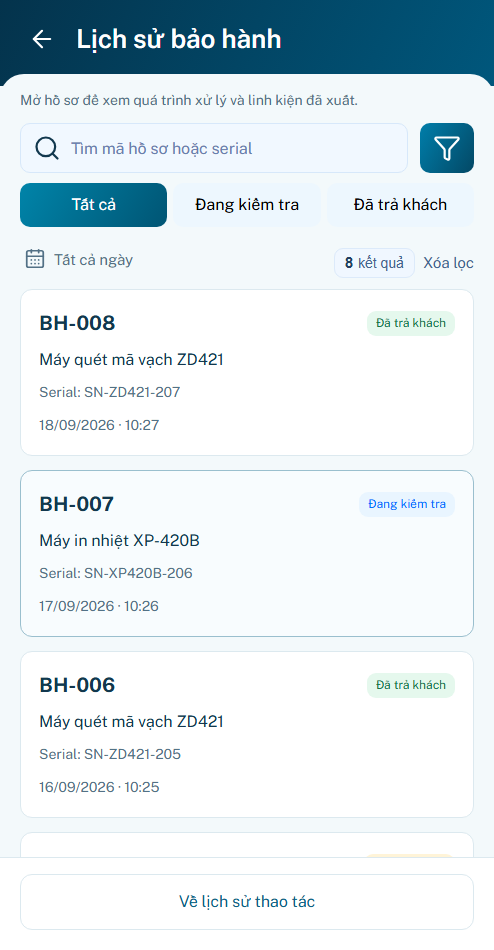
Sau · r02
S02 · Quá trình bảo hành
Timeline gọn; mốc mới nhất không ghi đè trạng thái owner.
Trước · r01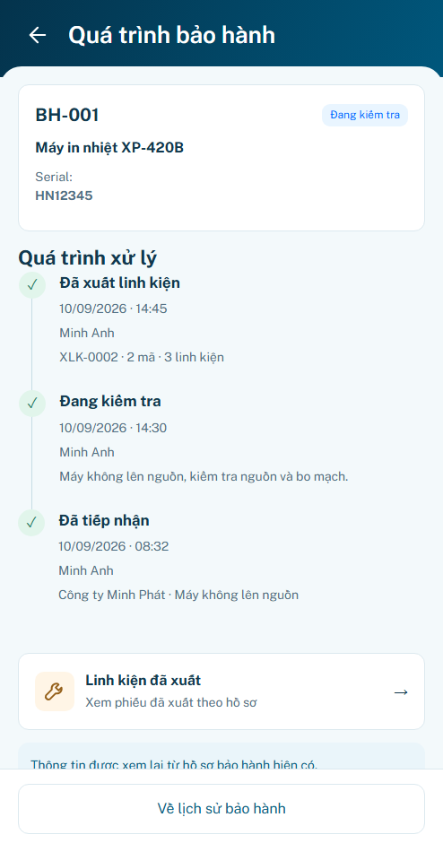
Sau · r02
S03 · Lịch sử phiên quét
Phân cấp card; controls gọn; Tải lại tại dock.
Trước · r01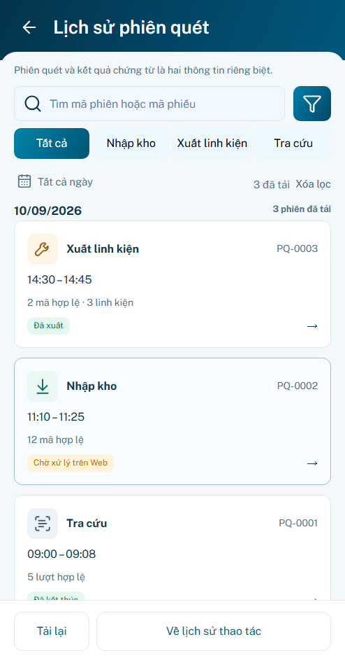
Sau · r02
S04 · Chi tiết phiên quét
Tách kết quả chứng từ/trạng thái phiên; toolbar tải lại; liên kết đúng owner.
Trước · r01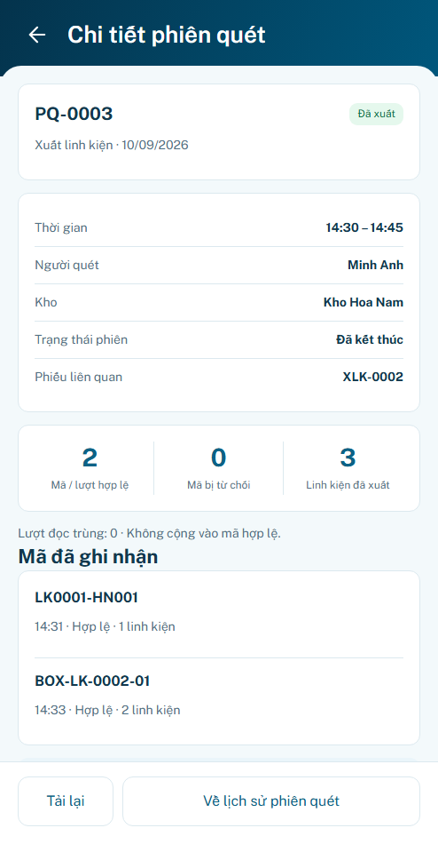
Sau · r02
Các nhánh đã kiểm
Xóa riêng từ khóa và bộ lọc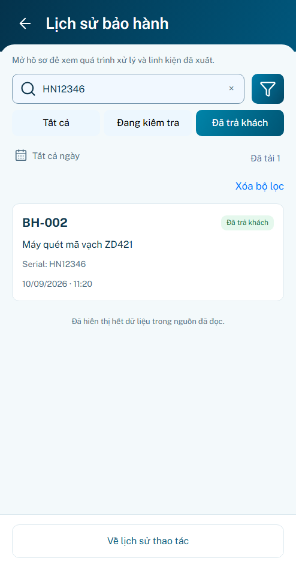
Vừa xem theo ID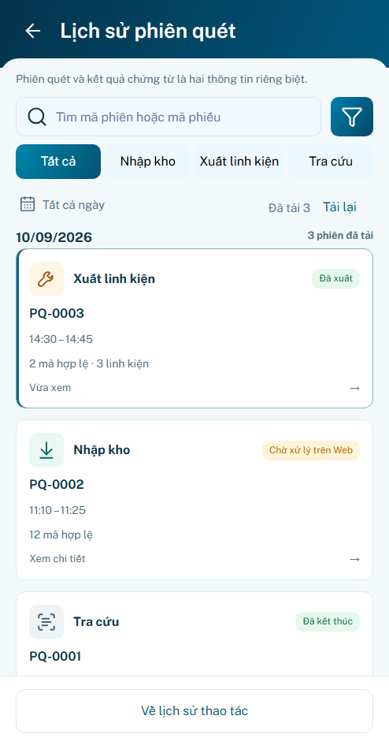
Timeline gọn Liên kết hồ sơ và receipt
Liên kết hồ sơ và receipt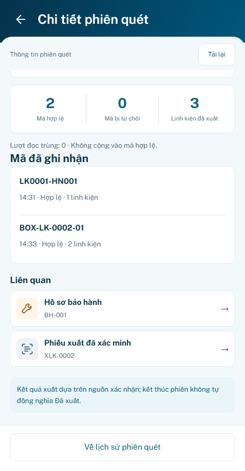
Mở đúng receipt P20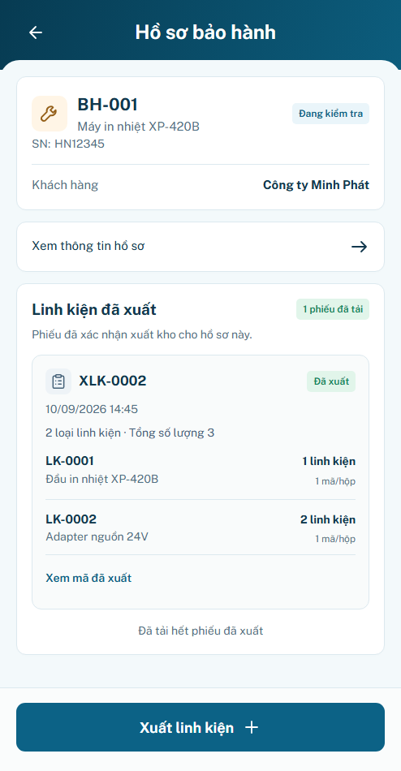
Tải lại lỗi giữ cache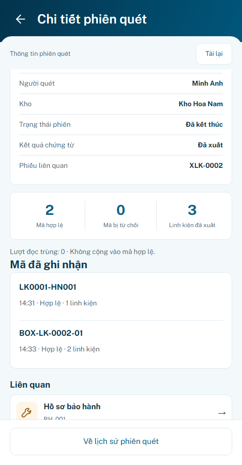
Đã gửi chưa đồng nghĩa ghi sổ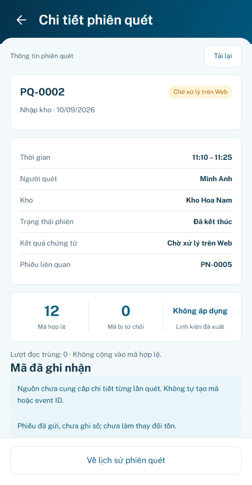
Tra cứu không tạo phiếu kho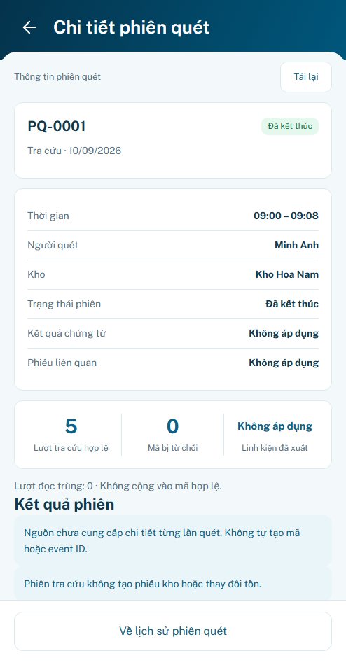
P22 r03 tạm chốt; state đồng bộ bổ sung sau. Backend, thiết bị thật và lưu bền chưa xác minh. P24 chưa hoàn tất. Không push/merge/deploy.